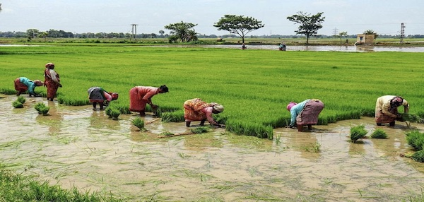
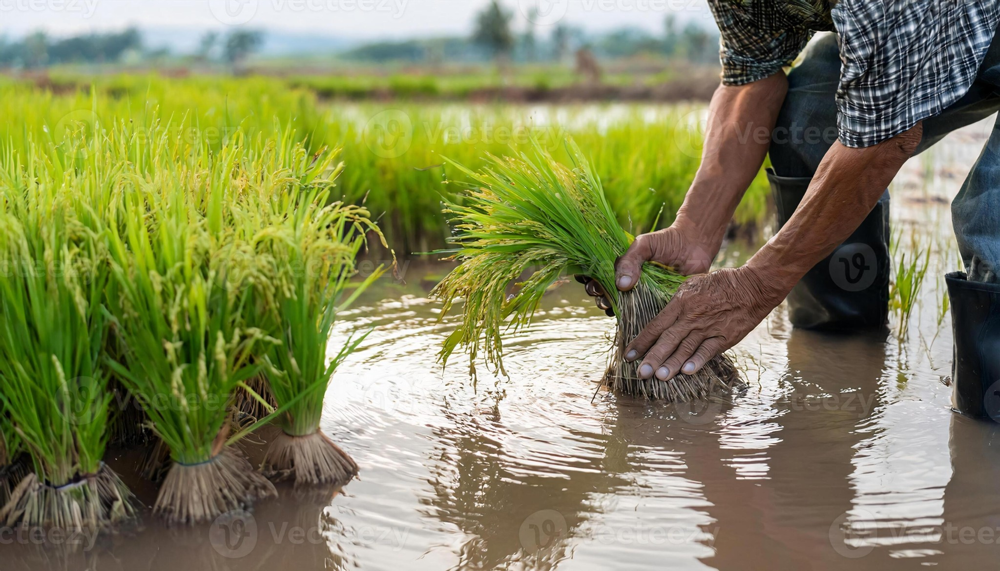
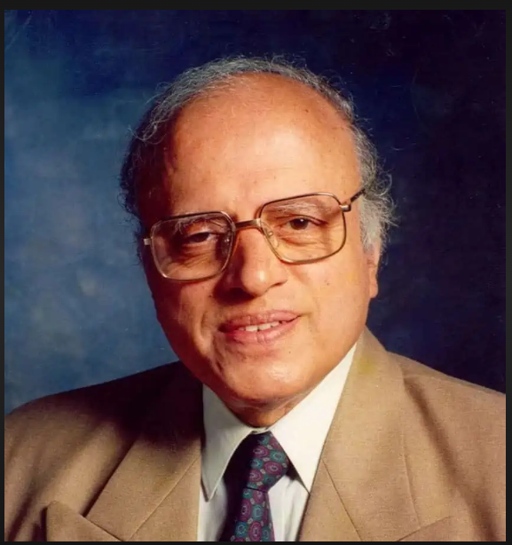
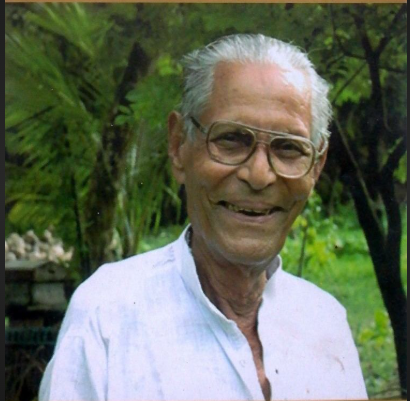
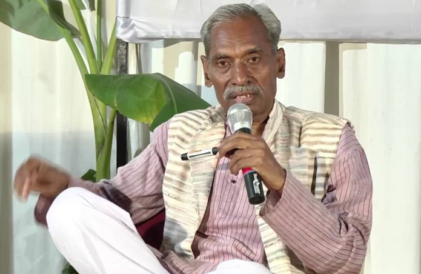

We often say farmers are the backbone of our food system.
But behind every meal… there are hands that never stop working.
The hands that sow, nurture, and harvest are the true heroes of agriculture. They work under the sun, through uncertainty and effort, quietly feeding the world.

For a farmer, farming is not just a job. It is a way of life built on hard work, patience, and hope.
From sunrise to sunset, their hands stay connected to the soil, growing food that sustains millions of lives.
“The hands that feed the nation are often the ones the world forgets.”

1. Sometimes, they wait for the rain, but the sky remains silent.
2. They work harder than anyone, yet often earn less than they deserve.
3. Their hands never stop working, even when hope feels uncertain.
4. Even when the world forgets their value, they continue to feed it.
5. Yet, they continue — feeding the entire nation.
“Agriculture is the most noble employment of man.”

The father of India's Green Revolution, he transformed agriculture and ensured food security for millions.
Read More →
A pioneer of organic farming who proved that agriculture can flourish in harmony with nature.
Read More →
Introduced Zero Budget Natural Farming, empowering farmers to reduce costs and rely on natural resources.
Read More →"Farmers are not just part of agriculture — they are the heart of it, sustaining life every single day."